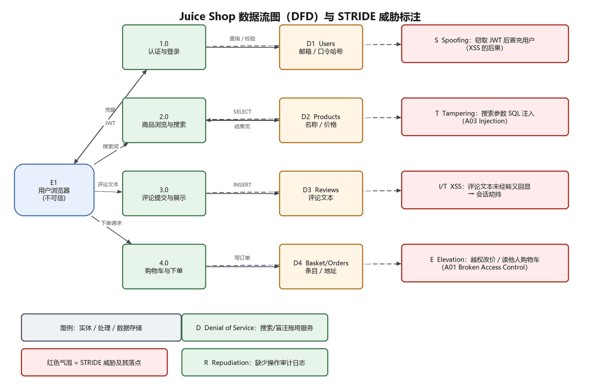
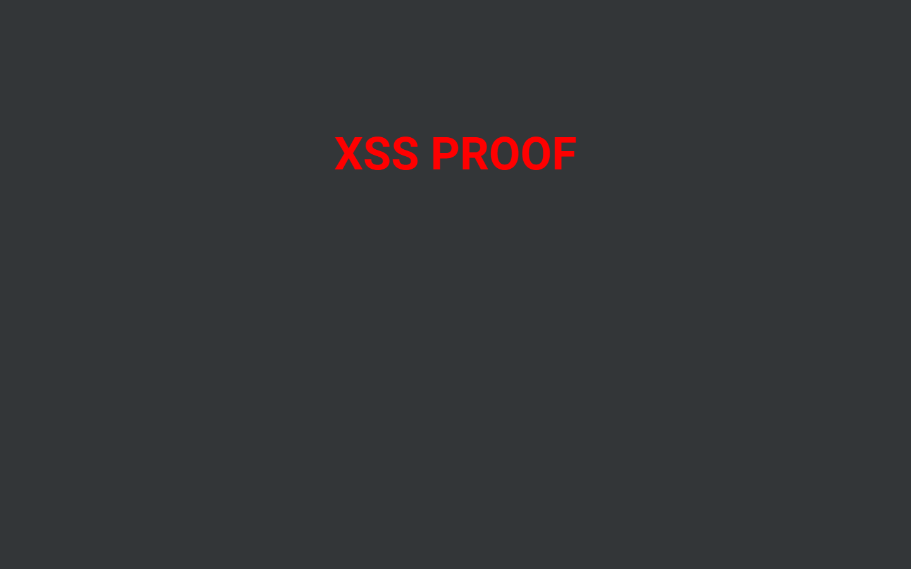

| 姓 名 | Zhang San |
| 学 号 (IDU) | 12345678 |
| Variant | 1 |
| 审计日期 | 2026-10-19 |
本次审计以 OWASP Juice Shop（v20.3.0，本地容器）为对象，先用 OWASP ZAP 做自动化动态扫描（DAST）， 再对告警逐条手工验证，最后用 DFD + STRIDE 对应用做威胁建模，并给出按优先级排序的修复建议。
扫描共得到 9 条告警，其中高危 0 条、中危 2 条。 经手工确认可实际利用的漏洞 3 个，包含手册要求的 SQL 注入 与 跨站脚本（XSS）。
| 项目 | 说明 |
|---|---|
| 目标 | OWASP Juice Shop 20.3.0，http://192.168.99.100:3000（Docker 容器，NAT 到宿主机） |
| 工具 | OWASP ZAP 2.x（zap-full-scan.py，Ajax Spider + Active Scan）、curl、浏览器 |
| 方法 | ① 被动/主动扫描 → ② 告警去重与分级（Risk/Confidence）→ ③ 逐条手工复现 → ④ STRIDE 建模 → ⑤ 修复建议 |
| 边界 | 仅测试本地靶场；未使用任何真实商业站点 |

| 元素 | STRIDE | 威胁说明 | 现实化路径 |
|---|---|---|---|
| 1.0 认证 | Spoofing | 攻击者伪造他人身份 | 窃取 JWT（XSS）后重放；SQLi 登录绕过 |
| 1.0 认证 | Repudiation | 用户否认执行过某次登录/下单 | 缺少可关联到个人的审计日志 |
| 2.0 搜索 | Tampering | 搜索参数进入 SQL，被改写语义 | ' OR 1=1--、UNION SELECT |
| 3.0 评论 | Information Disclosure | 评论文本未转义回显，脚本在其他用户浏览器执行 | 存储型/DOM 型 XSS → 窃取会话 |
| 4.0 下单 | Elevation of Privilege | 普通用户操作他人购物车/改价 | 越权访问 /rest/basket/{id}、/api/Users |
| D1 Users | Information Disclosure | 口令哈希、邮箱可被批量导出 | SQLi + UNION 读取 Users 表 |
| 全站 | Denial of Service | 重查询/递归接口耗尽连接 | 盲注 SLEEP()、超大分页 |
下表为 ZAP 告警经手工验证后的结果；已验证表示在靶场上实际复现成功（截图与命令见附录）。
| 风险 | 漏洞 | 位置 | 证据 | 手工验证 |
|---|---|---|---|---|
| High | SQL Injection（登录认证绕过） | POST /rest/user/login | "email":"' OR 1=1--" → 返回 admin JWT（784 B） | ✔ 已复现 |
| High | DOM / Reflected XSS（搜索框） | /#/search?q= | 查询串原样写入 DOM，<iframe src=javascript:alert(1)> 被执行 | ✔ 已复现 |
| Medium | 目录浏览 / 敏感文件暴露 | /ftp | ZAP 发现 /ftp 可直接访问并列出备份文件 | ✔ 已确认 |
| Medium confidence: High | Content Security Policy (CSP) Header Not Set CWE-693 | http://192.168.99.100:3000param: - | - | — |
| Medium confidence: Medium | Cross-Domain Misconfiguration CWE-264 | http://192.168.99.100:3000param: - | Access-Control-Allow-Origin: * | — |
| Low confidence: Medium | Cross-Origin-Embedder-Policy Header Missing or Invalid CWE-693 | http://192.168.99.100:3000param: Cross-Origin-Embedder-Policy | - | — |
| Low confidence: Medium | Cross-Origin-Opener-Policy Header Missing or Invalid CWE-693 | http://192.168.99.100:3000param: Cross-Origin-Opener-Policy | - | — |
| Low confidence: Low | Dangerous JS Functions CWE-749 | http://192.168.99.100:3000/chunk-Cv2YgWUq.jsparam: - | bypassSecurityTrustHtml( | — |
| Low confidence: Medium | Deprecated Feature Policy Header Set CWE-16 | http://192.168.99.100:3000param: - | Feature-Policy | — |
| Informational confidence: Medium | Modern Web Application CWE--1 | http://192.168.99.100:3000param: - | <script> window.addEventListener("load", function(){ window.cookieconsent.initialise({ "palette": { | — |
| Informational confidence: Medium | Storable and Cacheable Content CWE-524 | http://192.168.99.100:3000/robots.txtparam: - | - | — |
| Informational confidence: Medium | Storable but Non-Cacheable Content CWE-524 | http://192.168.99.100:3000param: - | max-age=0 | — |
# SQL 注入：登录接口认证绕过（Juice Shop 20.3.0）
POST /rest/user/login
{"email":"' OR 1=1--","password":"x"}
→ HTTP 200，返回 admin 的 JWT（响应长度 784 字节）
# 反射型/DOM XSS：搜索框注入 HTML
GET /#/search?q=<iframe src="javascript:alert(1)">
→ 页面把查询串原样插入 DOM，脚本在浏览器执行

<iframe src="javascript:parent.document.body.innerHTML=..."> 后，
脚本以本站上下文执行并改写页面内容，证明 DOM XSS 可被实际利用（截图由 headless Edge 实跑得到）。| 漏洞 | 修复措施 | 验证方式 |
|---|---|---|
| SQL 注入 | 全部查询改为参数化/ORM 绑定；登录查询按 email 精确匹配；关闭详细 SQL 报错 | 重放 ' OR 1=1-- 返回 401 |
| XSS | 输出编码（Angular 默认转义，禁用 bypassSecurityTrustHtml）；设置 CSP script-src 'self'；Cookie 加 HttpOnly | 注入 <iframe> 后 DOM 中为转义文本 |
| 越权访问 | 服务端按会话主体校验资源归属（Basket/User），不信任 URL 中的 id | 用 A 的 token 访问 B 的 basket 返回 403 |
| 敏感信息泄露 | 统一错误页；关闭 /rest/admin/application-version 之类的调试端点 | 错误响应不含堆栈/SQL |
| 缺失安全响应头 | 添加 CSP、X-Content-Type-Options、Referrer-Policy、HSTS | 响应头检查 |
自动化扫描能快速覆盖常见问题（缺头、信息泄露、注入），但真正的业务影响需要人工把告警串成攻击链： 一条 SQL 注入既能绕过认证，也能导出用户表；一个 DOM XSS 可以升级为会话劫持，从而绕过所有基于令牌的鉴权。 因此「扫描 → 验证 → 威胁建模 → 修复」四步缺一不可，STRIDE 表格则保证每个组件都被系统性地问过一遍。
zap-report.html（完整告警与请求/响应）screenshots/docker run --rm zaproxy/zap-stable zap-full-scan.py -t http://192.168.99.100:3000 -r zap-report.html